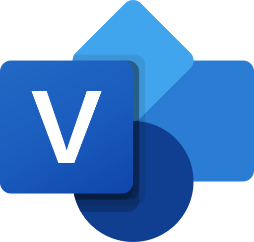
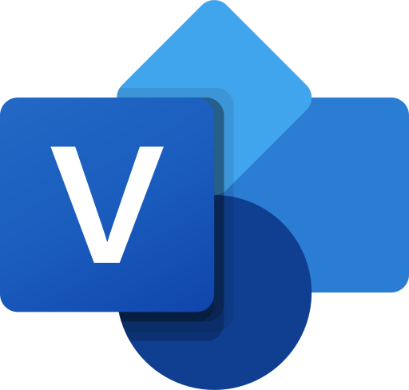

This section is for the University of Guelph's co-op program.
Company: ATS Corporation
Manager: Christopher Janca
Role: Data Analyst
Tenure: May 08 - Sep 13
Introduction
For my first work term, I had the amazing opportunity to work at ATS - a leader in the industrial automation space. During my first four months, I have gained many skills that will aid me in my future. I have improved my technical knowledge, business knowledge, and collaborative skills. In this report, I will be explaining some of the major projects and initiatives I have been apart of and my plans for my future at ATS.
Technologies

 

Before I explain some of the specific responsibilities I've had, I will first explain some of the major technologies I used during my first four months at ATS. As a Data Analyst, it's it important that I am comfortable with Microsoft Excel as the majority of the data I am working with is delievered in Excel spreadsheets. I was able to greatly improve my understanding of Excel at ATS due to how common it was to work with it.
Besides Excel, another technology I commonly used was Salesforce. My team plays a major role in creating reports and dashboards in Salesforce for other teams to utilize, meaning it was crucial that I was familiar with how to create these reports and dashboards. Additionally, we need to use Salesforce to pull data to analyze so my skills with the technology improved drastically.
Another technology I used was Visio. I was commonly tasked with creating Visio's to visually represent some of the things I was working on. In order to easily understand some of the processes and to document work, I used Visio and gained a comfortable familiarity with the app.
Kaizan
One of the first things I participated in at ATS was a Kaizan. A Kaizan is where a group of employees come together to change something about the business with the goal being continuous improvement. The Kaizan I was involved in was to evaluate major processes throughout the business to identify room for automation/optimization.
During this Kaizan, I learned a lot about how ATS as a business functions. I learned the relationship between a lot of the different teams in the organization which really helped when starting out. The things I learned weren't specific to ATS however, there was valuable general information about business that I can take with me to wherever I work in the future.
My specific responsibility at this Kaizan was to document the work using Visio. There was a lot of work being done using sticky notes on a brown sheet to represent reformed business processes. If the work was needed after the Kaizan, it would be much more accessible and understandable digitally. I utilized Visio to digitize the hardcopies so that all the work in the Kaizan was documented and can be used afterwards.
Customer Segmentation
A major project I was involved in was Customer Segmentation. Customer segmentation is the process of dividing a company's customer base into distinct groups based on certain characteristics so that marketing strategies can be tailored to each specific group. We had a goal to push customer segmentation forward within the business.
Customer Segmentation Scorecards
Through divising a plan on how to implement customer segmentation into the business, the customer segmentation scorecards were created. They consisted of multiple questions related to our customers: their proximity, automation competency, average spend with ATS, etc. Each scorecard was a separate Excel file containing the data.
I was tasked with aggregating the data so it can be easily utilized in analysis. After the aggregation, I created potential questions that we could get answers to using this data. An example question would look like "how does the customers average spend with ATS corrlate with their automation competency?". After creating some sample questions, I utilized Excel to create charts and graphs in attempts to answer some of these important questions. This aggregation was used in a presentation to stakeholders in the business.
Customer Financial Data
Another aspect to customer segmentation was collection our customer's financial data. I was tasked with looking through public financial reports belonging to our customers to collect data on their financial position. The main facts we were looking for were their revenue and profit, comparing these facts year-to-year. This was to see if we can find insight into the financial growth of our customers, to see if we can find an opportunity for more capital investment into ATS.
Future Goals

I want to expland some of the technologies I am using to make my work more efficient. I believe I can utilize Python to automate and create scripts that will help me create aggregations effectively. I also want to learn Tableau as it is a powerful data visualization tool. Expanding the technologies I am using will also align some of my work with my Computer Science degree.
My next work term is also at ATS, so I hope I can accomplish these goals during the next 4 months!
Conclusion
In reflection, my tenure at ATS has been an incredibly enriching and transformative experience. Not only have I been able to apply my academic knowledge to real-world scenarios, but I've also grown both technically and interpersonally.
Company: ATS Corporation
Manager: Christopher Janca
Role: Data Analyst
Tenure: Sep 14 - Dec 22
Introduction
For my second work term, I continued my work as a Data Analyst at ATS. During my four months, I improved upon the skills I learned during my first work term and was involved in more significant projects. In this report, I will be explaining the projects I worked through, the technologies I used, and my general thoughts on my term.
Technologies
During this work term, I engaged with a new technology that aligned with my goals for this term. I utilized Tableau to create dashboards for my colleagues, which were widely used around the business. I also used Tableau Prep, a tool for which you can clean and transform data so it is easier to used within Teableau. This experience with cleaning and visualizing data was extremely valuable and was a goal of mine from my last work term.
I was still using salesforce and excel, but this time in different contexts. A big part of my work term was taking over the Monthly Business Review processs for out Key Account Service Leader team. I was very familiar with the salesforce and excel platforms now and can take this experience into future roles.
Monthly Business Review (MBR)
At ATS, in my role as a Data Analyst, I was entrusted with the critical responsibility of overseeing the Monthly Business Review (MBR) process. This process was pivotal in reporting the sales funnel and bookings for all the Key Account Service Leaders (KASLs). My duties involved a meticulous monthly routine where I would extract data from Salesforce and transfer it into Excel. This step was crucial to ensure the accuracy and reliability of our numbers and reporting. In addition to the technical aspects of data handling, my role also entailed consistent collaboration with the KASLs. During these interactions, I focused on clarifying the reporting process and, when necessary, adjusting and explaining specific figures. This project not only honed my data analysis and reporting skills but also strengthened my abilities in cross-functional communication and collaboration.
Tableau Projects
In my role as a data analyst, I spearheaded several impactful projects using Tableau, a cornerstone of which involved developing a comprehensive Tableau Prep flow. This initial project was focused on creating a master database, a central repository that aggregated diverse sets of data. The designed database was not only robust but also equipped with advanced filtering capabilities, allowing for nuanced data analysis and accessibility. Building upon this foundational work, my next venture was the creation of a dynamic sales dashboard. This dashboard was meticulously designed to display bookings and sales funnel information across various categories, serving as an invaluable tool for sales leaders throughout the business. The dashboard's intuitive interface and insightful data representation quickly made it a favored resource.
Responding to evolving business needs, I received a request to enhance this dashboard with additional functionalities. This involved integrating a new filter specifically tailored for another business unit. I approached this task with a strategic mindset, duplicating the existing dashboard and then expanding its capabilities to encompass the required features. Through careful adjustments and refinements, I ensured that this modified version not only met the specific needs of the additional business unit but also maintained the integrity and usability of the original design. The success of this endeavor was evident as my dashboard evolved into the template dashboard for the organization, setting a new standard for data visualization and analysis. This project not only exemplified my technical prowess in utilizing Tableau but also underscored my ability to adapt to and anticipate the changing needs of the business, ensuring that the tools I develop are both versatile and user-friendly.
Ending Thoughts
As my co-op term draws to a close, reflecting on the completion of these two significant projects brings a sense of accomplishment and a wealth of insights. The journey through these initiatives has been immensely enriching, particularly in honing my skills as a data analyst. From mastering Tableau for data visualization to managing databases and developing interactive dashboards, each task has added a new dimension to my analytical abilities. Looking ahead, I am excited about the prospect of transitioning these acquired skills into a software development role. The analytical thinking, problem-solving capabilities, and attention to detail I cultivated during my term are directly transferable and immensely valuable in software development. Moreover, the experience of working collaboratively with different business units has equipped me with a unique perspective on user-centric design and functionality, which are crucial in software development. I am eager to leverage this blend of technical expertise and business acumen in my future endeavors, bridging the gap between data analysis and software development to create impactful technological solutions.
Conclusion
In conclusion, this co-op term has not only been a journey of professional growth and skill acquisition in data analysis but also a pivotal stepping stone towards my future aspirations in software development, where I aim to blend these experiences into creating innovative and impactful technological solutions.
Company: Royal Bank of Canada (RBC)
Manager: Kevin Christaeans
Role: Data Analyst
Tenure: May 2 - Sep 1
This was not apart of Guelph's offical co-op program.
Company: Royal Bank of Canada (RBC)
Manager: Kevin Christaeans
Role: Data Analyst
Tenure: Sep 2 - Dec 27
Introduction
For my third work term, I had the opportunity to work as a Data Analyst at RBC, one of the largest finanical institutions in Canada. During my term, I applied my previous experience and enhanced my analytical skill by contributing to very meaningful projects. In this report, I will explain the projects I worked on, the technologies I used, and my general experience during this work term.
Technologies

During this work term, I had the opportunity to work with more technical tools and workflows that closely aligned with my interests and my program. A signigicant part of my role involved using python to extract, transform, and load data efficiently onto our Miscrosoft SQL server database.
Once the data was stored, I used Tableau for data visualziations that provided insights and analysis to many team members. This end-to-end experience, from data extraction and transformation to database management and visualization, gave me an understanding of the full data analytics lifecycle. It was an extremely valuable and satisfying experience that improved my technical expertise and prepared me for future challenges in the data field.
Wires Formatting
One of the key projects I worked on during my term was the Wires Formatting project, which focused on analyzing the cycle of wire payments within the bank. This involved pulling data to capture the initial state of wire payments as they entered the bank and identifying cases where errors required repairs before the payments could be processed to their final state. By extracting both the initial and final datasets from various sources, I created a comprehensive Tableau visualization to analyze the differences. This visualization provided insights into commonly repaired fields, enabling the team to identify trends and potential areas for process improvement. This project not only strengthened my skills in data extraction and visualization but also offered a deeper understanding of workflows within a financial institution.
Programming Improvement
During this work term, I made significant improvements in my programming skills, particularly in Python, which enhanced my capabilities as a data analyst and aligned closely with my Computer Science degree. I gained valuable experience connecting to various types of databases directly through Python, allowing me to automate data extraction and streamline processes. Additionally, I delved deeper into the pandas library, a popular tool for data manipulation and analysis.
Beyond Python, I also expanded my technical skillset by learning how to program Excel macros, a skill I applied to an ad hoc project for another team. This involved automating repetitive tasks in Excel, saving time and ensuring consistency in their new workflow. These experiences were not only rewarding but also provided more technical depth compared to my previous co-op term.
Python Selenium Automation
The project I am most proud of and received the most recognition for was creating a Python bot for automation. There were around 7000 records within a system that needed updating, and they needed to be updated within a tight deadline. I offered to create a Python bot by utilizeing the Selenium library to automate the updating of the records. This solution provided crucial support to a problem that would reqiure multiple full time employees to work through weekends to complete the work.
This project gave me the opportunity to communicate with other teams to review and iterate through requirements. I also improved upon my Selenim skills, as I had limited experience with the library.
Goals for Next Term
I am also spening the winter term at RBC on the same team. Looking ahead to my next term, my primary goal is to automate the execution of Python programs that currently need to be run manually on a daily basis. To achieve this, we plan to leverage Dataiku, a platform that facilitates data workflows and automation. Additionally, I am eager to explore the machine learning tools available within Dataiku, as they align with my long-term aspiration to transition into a data science role. By gaining hands-on experience with these tools, I aim to build a stronger foundation in predictive modeling and advanced analytics, further bridging the gap between my academic background and my professional interests.
Conclusion
In conclusion, this co-op term has significantly enhanced my skills in Python, Tableau, and data management, bridging my academic knowledge with practical applications. These experiences have brought me closer to my goal of transitioning into data science, where I aim to continuously improve throuhgout my professional career.
In progress.